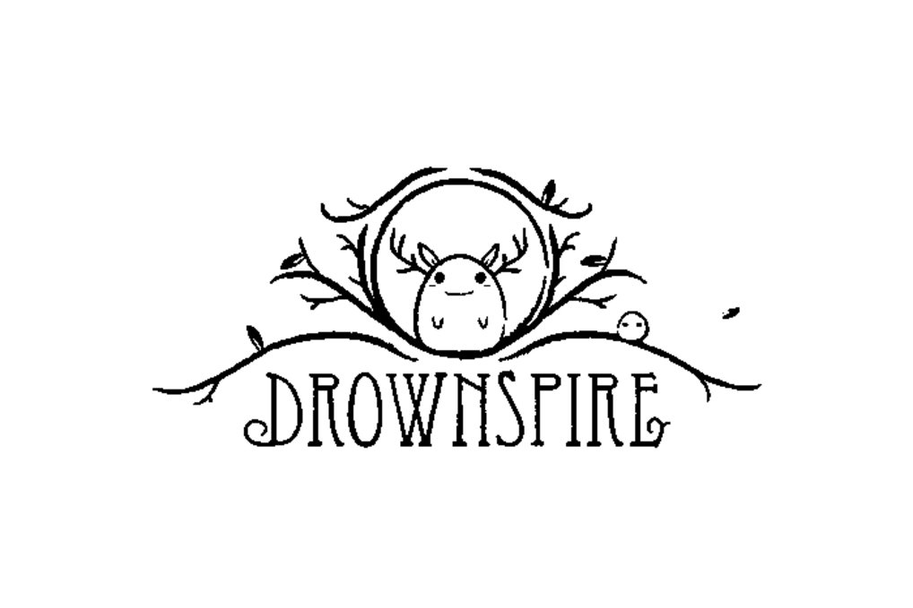
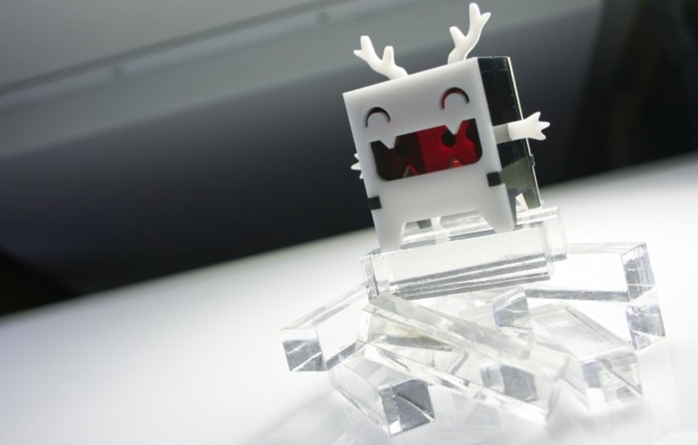
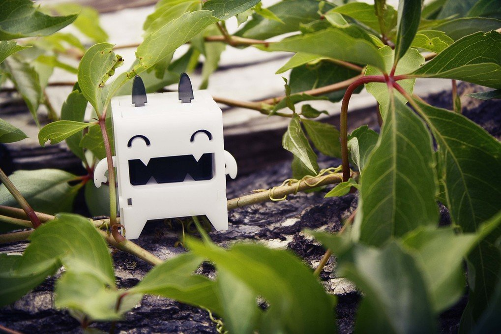
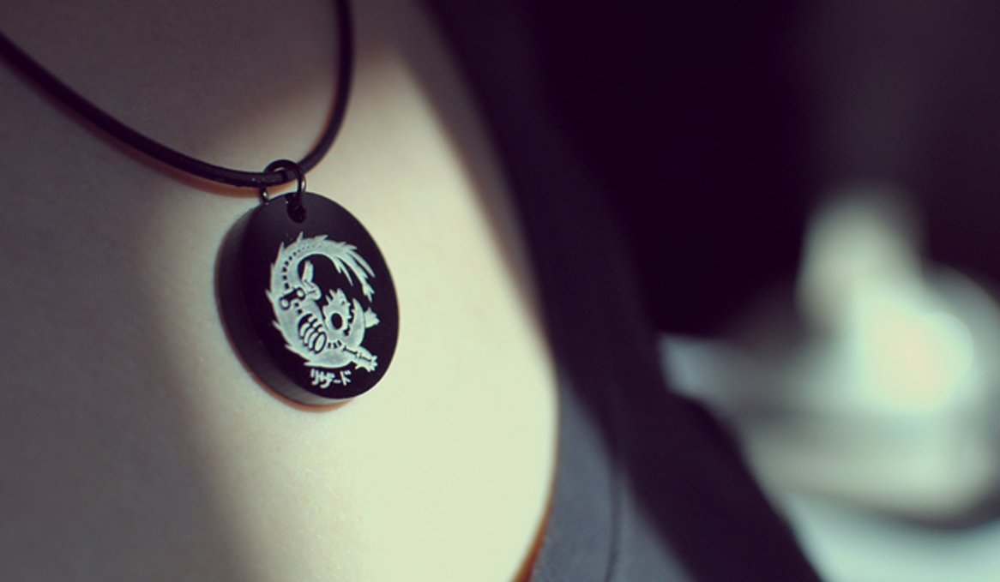
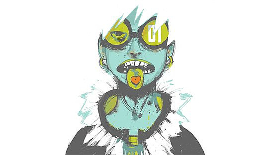
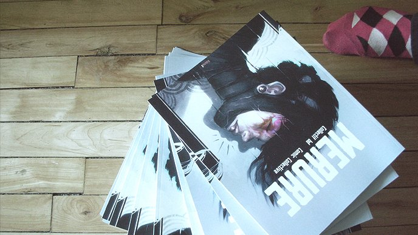
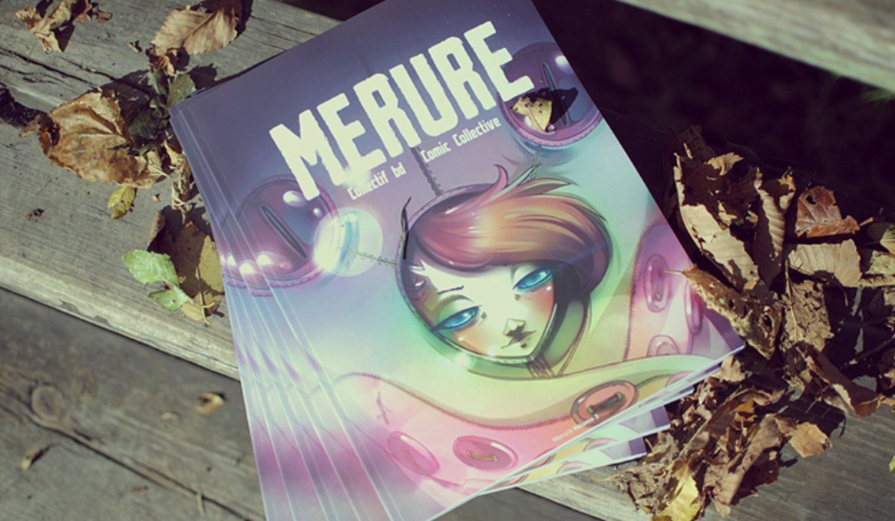
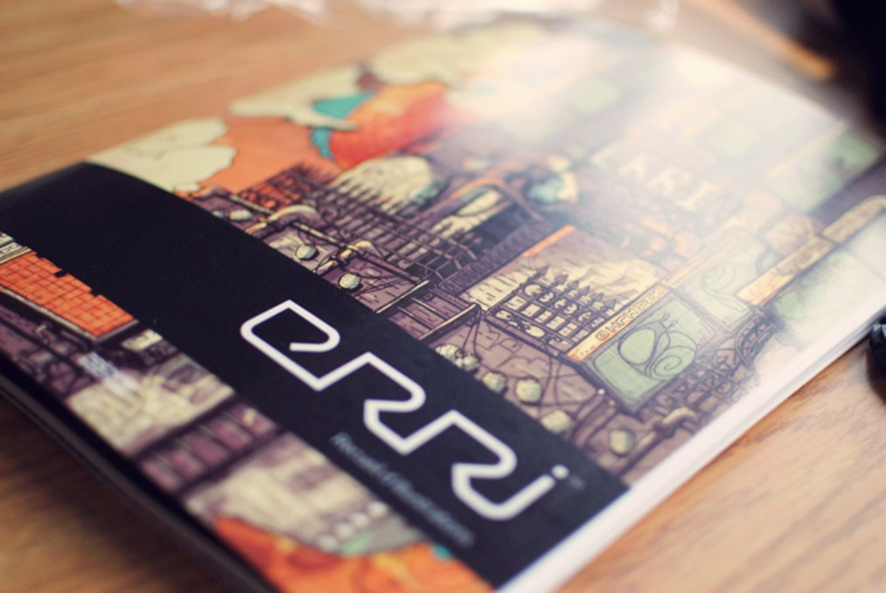
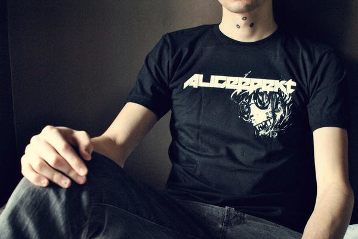

drownspire
Drownspire was a small art studio we ran between 2010 to 2012. We made short runs of art toys, jewellry and apparel. We also sold tickets to Chiptune events in Montreal.
We closed the studio after we decided to move to Japan in late 2012. Below are a few of the projects we made.
Vambits
Vambits were small art toys designed by Devine. Each one had to be assembled. The material was easily customizable, that way people could make them look exactly the way they wanted. These happy little critters brought a bit of liveliness to any living space. A Vambit was about 4 cm x 3 cm x 3 cm and crafted in acrylic plastic.
Vambits came with an instruction sheet and 15 acrylic pieces that snapped together. We had a variety of colors and shapes for faces, ears and arms.
Skeli
SKELI were animal skeleton designs etched in acryclic and appended onto a necklace. The necklace was made of 18 in long (2 mm thick) black rubber, and it had a soft clasp for a secure and easy lock. The pendant was held up by a black nickel jump ring.
They were sold in old camera film casings with an identifying sticker.
Merure
  Merure was a compilation of short comics we published with friends. All participating artists originated from Montreal, Canada. Each artist had three months to come up with a concept, from thumbnail sketches to final product, without thematic or technical constraints, while juggling with their professional or student lives. The result was a myriad of styles and ideas which made others discover an ecclectic side to the underground comic arts.
Erri
ERRI was an illustration book featuring artists from Quebec. We only printed one book. This volume was a 250 copies limited edition anthology created and produced in Montreal on June 2nd 2010. This book was a collaboration project with Michael Verhaaf and Vincent Desbiens.
It featured the art of Mathieu Choquet, Vincent Desbiens, Michael Verhaaf, Alexandre Boyer, Valerie Bastille, Samantha Leriche-Gionet, Frederic Dupere, Mathieu Beaulieu, Joel Prittie, Nicolas Francoeur, Mila Anctil, Thomas Leblanc, Veronique Comeau, Etienne Aubry, Jonathan Robert, Sarah Baril, Gabriel Malette, Marianne Vincent, Emmanuel Perron, Ahmed Kassem, Edith Lebel, Eve Archambault, Marc Brunet, Fred Benett, Camilie Leduc, Duy Thang Nguyen, Bernard Leduc, Benjamin Arcand, Audrey Malo, Marie-Claude Marquis, Jared Karnas, Gwendal Creurer, Marc-Antoine Roy, Christian Lanouette and Pierre Nicolas Riou.
Apparel
An Aliceffekt t-shirt.